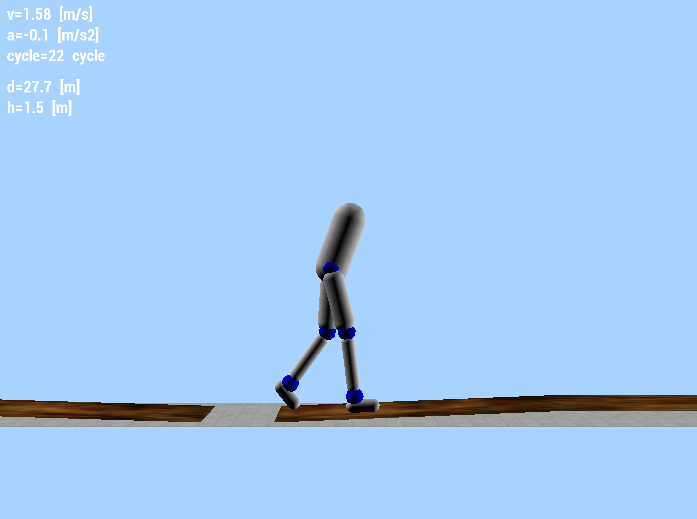

The Crane Camera is a solution for construction site monitoring. 2D and 3D as-built data delivered every day automatically with no site intervention needed.
NASA SuperBALL
SuperBALL is an all-in-one landing and mobility platform based on tensegrity structures, allowing for lower-cost, and more reliable planetary missions.
CleanSpace One
The CleanSpace One mission goals are to raise awareness of the orbital debris problem, develop and test non-cooperative rendezvous technologies, and as a demonstration, de-orbit the SwissCube satellite.
Central Pattern Generators
The tradeoff between robustness and energetic consumption in human locomotion was studied thanks to a reflex-based neuromuscular model augmented a feedforward component (CPGs).
Adaptive structure for multirotor drones
Carrying payloads of different weights and sizes such as medical supplies and small consumer goods is a desirable feature for drones. This project consisted in the mechanism design for an adaptive structure to fulfill this task.
A fully autonomous mapping alternative to drones in the construction sector
The Pix4D Crane Camera is a solution for construction site monitoring. 2D and 3D as-built data delivered every day automatically with no site intervention needed.
Video down here currently is not embedded surely due to the fact that I am not yet in a public domain...
The connected systems are mounted on crane jibs and are powered by the crane itself. The hardware is weatherproof and designed to resist crane vibrations. Each system integrates a professional photogrammic-grade camera, localization & navigation sensors, as well as an embedded computer.
Construction site workflow is automated and data is hosted in Pix4D's cloud platform. Images are captured automatically during normal crane operations, sent to the Pix4D Cloud via a 4G connection, and processed automatically once they're there.
Results can then be used in the Cloud with built-in measurement tools, such as 2D maps/orthophotos, 3D point clouds, 3D mesh models, as well as the original high-resolution images. Sharing and download options also allow seamless integration with common CAD or BIM software.
Sensor fusion (state estimation) on embedded hardware
Mechanical design
Development of simulation tools
Automation scripts
Date: January 2018 - Present
NASA SuperBALL
A Biologically Inspired Robot for Planetary Exploration
Tensegrity structures are becoming increasingly popular as a dynamic architecture for robotics. As they are only composed of compressive elements and tensile elements, they have the potential of being lightweight, low-cost and more importantly, robust against impacts.
For these reasons these designs are being currently explored in the aerospace industry. Outer space missions require robots that would be capable of handling very harsh environments, and being able to reduce costs in what is a very costly industry is certainly of interest.
Thus, one could imagine using tensegrities as systems capable of Entry, Descent and Landing (EDL), as well as mobile systems once they are on the ground. What's more, the structure could be used as a protective cage for a scientific payload which would be safely secured within the structure.
In the scope of his Master's Thesis, I had the extraordinary opportunity to work on such tensegrity systems at NASA Ames Research Center (Mountain View, California), specifically on the new version of the Spherical Underactuated Planetary Exploration Rover ball (SUPERball). This tensegrity robot is a tensegrity icosahedron composed of 6 rigid rods and 24 actuated cables.
More specifically, my goal was first and foremost to implement biologically-inspired control techniques for SUPERball using Central Pattern Generators (what he learned whilst doing research for EPFL's Biorobotics Laboratory).
Bio-inspired controls in general have proven to be simple models capable of generating very complex gaits in other types of robots, all thanks to their inherent robustness and modulation capabilities.
Trying to obtain locomotion out of the tensegrity icosahedra was the main research focus of this project. However, as there is currently no general methodology as to how one should implement these control algorithms into a physical system, different approaches were taken.
Firstly, a double chain of phase oscillators was implemented and tested thanks to the physical simulator known as NASA Tensegrity Robotics Toolkit (NTRT). Though some issues with the software collection were discovered, corrections were brought to the simulator. Nevertheless, some improvements are still required and are currently underway.
Secondly, a different approach was taken. By using Arbitrary Waveform Oscillators (AWOs) and amplitude-controlled CPGs, a framework to use CPGs as signal-learners was implemented and tested with locomotion algorithms obtained thanks to Reinforcement Learning with the 12-actuator version of SUPERball.
Finally, an implementation in Matlab was explored. It incorporates feedback elements into the CPGs thanks to the Tegotae rule, a Japanese concept which describes the extent to which a perceived reaction matches an expectation.
Parallel activities were also done throughout the project, such as contributing to the manufacturing of mockup models of the robot, testing of some of the mechanical components, and assembly of the final prototype of SUPERball v2.0.
Due to time constraints and hardware limitations with the current prototype, only some of the obtained locomotion algorithms could be tested on the physical prototype of the robot. Still, research is ongoing, and a paper on SUPERball v2.0 was published and presented at IROS 2018.
Date: February 2017 - August 2017
CleanSpace One
A satellite to gobble up space debris
Space debris is an often overlooked result of the space conquest. Ever since the first satellite launch in 1957, pieces of broken down satellites and spent rocket stages have been accumulating around our planet. On top of that, the amount of "space junk" has been increasing at an alarming rate, due to the easier access of space.
EPFL's Space Engineering Center was tasked with developing and building a satellite whose main objectives were to increase awareness with regards to orbital debris, demonstrate state-of-the-art technologies related to Active Debris Removal, and finally, as a first mission: to de-orbit the SwissCube satellite.
That is how the CleanSpace One project was born.
During my time at EPFL, I've had the chance to work on that project, most notably in the updated revision of the satellite. Indeed, I've implemented and run dynamical simulations of the satellite's capture system, in order to optimize its shape.
To my great pleasure, my work was published and presented at the 68th International Astronautical Congress in Adelaide, Australia. You may find our paper's abstract embedded on this page. Feel free to contact Marc for more info on the full paper.
A few years have passed, and the CleanSpace One project has now become a fully fledged startup, ClearSpace.
Energetic cost of robustness against rough terrain and perturbations

Efficient exoskeletons could allow people who have lost the use of their legs to be able to move freely again. This is one of the main goals of the European Symbitron project (Symbiotic man-machine interactions in wearable exoskeletons to enhance mobility for paraplegics) of which EPFL's Biorobotics Laboratory is a collaborator, namely "to develop a safe, bio-inspired, personalized wearable exoskeleton that [would enable] SCI (Spinal Cord Injury) patients to walk without additional assistance, by complementing their remaining motor function."
Humans are capable of highly complex dynamical gaits, so recreating it perfectly is extremely difficult. One of the strengths of human walking gait is to be highly robust to rough terrain and external perturbations, so implementing this on the neuromuscular model and on the exoskeleton is extremely important for the SCI patients to be able to walk again without additional assistance. However, this requires great energetic cost. Minimizing the exoskeleton’s power consumption would therefore be quite useful, so it ultimately becomes more accessible to the general public.
The Feedforward and Feedback Based Locomotion (3FBL) model was composed of reflex-based neuromuscular model augmented by a feedforward component that highlighted the importance that interneurons (IN), motoneurons (MN) and muscle-tendon units (MTU) had on the torque applied to the different joints of each leg (see image below).
In order to tune the many open parameters of the model, an optimization framework was used, more specifically Stage Particle Swarm Optimization. Thanks to it, multiple fitness functions could be defined and solved sequentially during the optimization routine.
The selected fitness functions were based off of distance, speed, energy and torque produced in different priority orders. The main comparative measure these tests would have was the cost of transport, as it takes into consideration the energy produced by the model, as well as the travelled distance.
Other parameters that were tuned were the relative percentage of importance between feedforward and feedback components of the model
Finally, as the title of the project suggests, the model was deployed and assessed in difficult terrain, to make sure the energetic cost was minimal
Simulation results were promising, but there was no time in the 6-month project period for the controller to be tested on real hardware.
Date: February 2016 - June 2016
Adaptive structure for multirotor drones
Structural design to transport packages of different sizes
Most companies that are exploring the use of drones for aerial transport are constrained by two big factors: container shape and weight. The latter may be adressed with more powerful motors or a greater number of rotors in the multirotor. The former is a more complex problem to be solved, as no standard box shape or size exists across multiple logistics companies.
The idea of this project was to conceptually find a solution that would be suitable for many different box shapes and sizes. The idea of a modular design was quickly prioritized.
After a few iterations, a "birotor" base structure was the preferred design, as it would make it easier to have a symmetrical system, and also due to the fact that connecting multiple birotors along a single axis could be the preferred mode for transporting boxes such as rectangular tubes.
Moreover, to be capable of carrying packages of different widths, the birotor base structure was based off of a pantograph structure (again, with symmetry as one of the main goal of the modules). As for package height adaptibility, sliders were also integrated to the design of the birotors.
Finally, the gripper was designed as a corner assembly containing double door hinges and torsion springs to contain the package within the area of interest.
The final prototype was thus manufactured using carbon fiber as the main structure components, with 3D-printed Polylactic Acid (PLA) and Ninjaflex parts.
This project was purely a mechanical design project, so no flight controller was implemented during the 6-month academic period this project was ongoing. Subsequently, no video of the structure in flight was ever done, but this is a personal project Marc means to tackle when he'll have some free time.